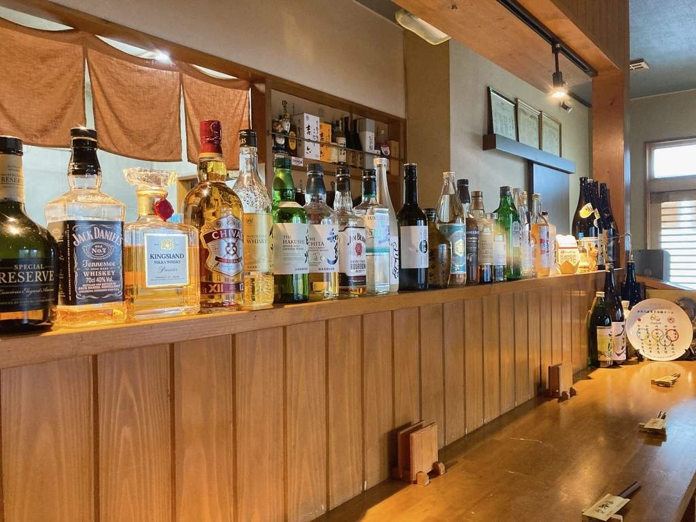
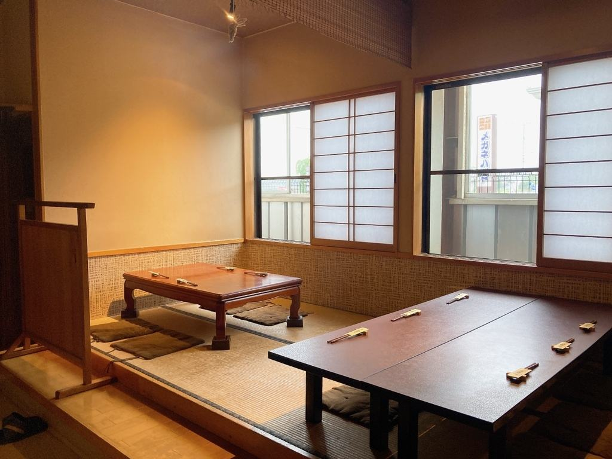
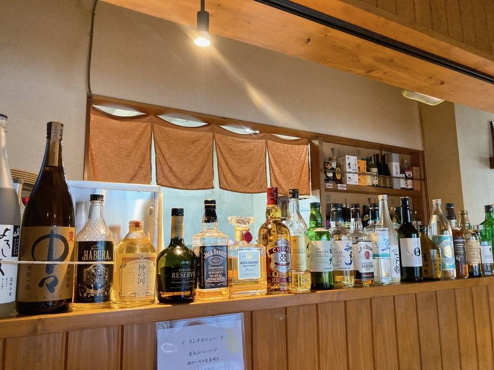
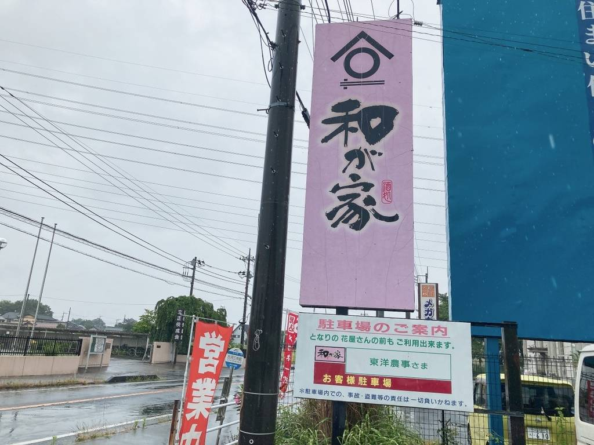
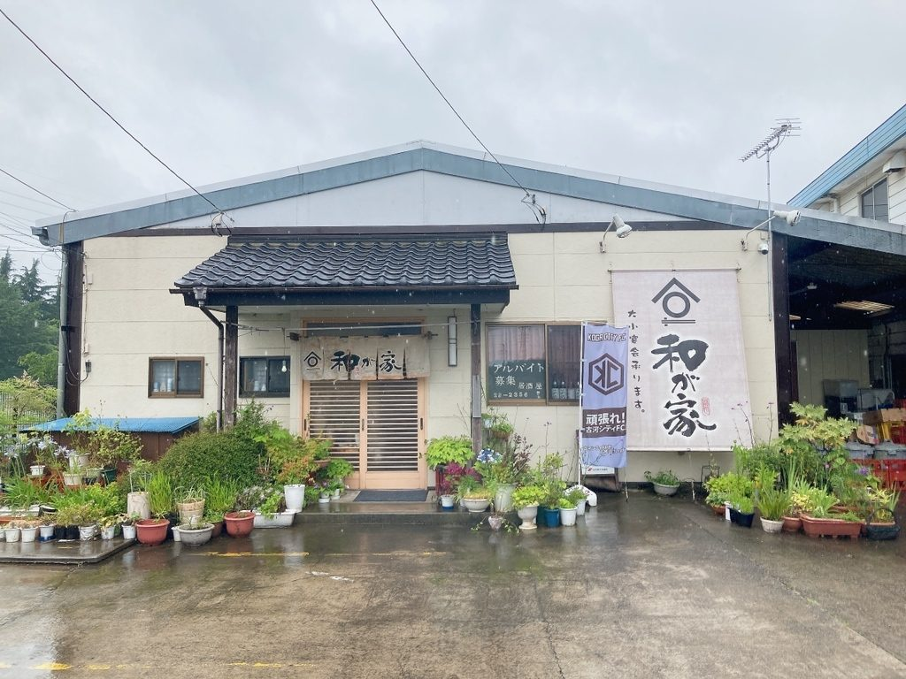

空間・お席のご案内
茨城県古河市の居酒屋 和が家は、お一人様のしっぽり飲みから、ご家族での食事、完全個室での宴会まで、幅広いシーンでご利用いただけるアットホームな居酒屋です。
お昼のボリューム満点ランチから、夜の手作り料理と幻の日本酒「十四代」まで、皆様の「お帰り」をいつでも温かくお待ちしております。
※「十四代」は仕入れ状況により品切れの場合がございます。お電話でご確認ください。
足を伸ばしてくつろげるお座敷、お仕事帰りにふらっと立ち寄れるカウンター席、そして周りを気にせず食べて歌って楽しめる「カラオケ完備の完全個室」をご用意しております。その日の気分や用途に合わせて、ご自宅のようにゆったりとした時間をお過ごしください。



店舗情報・アクセス
| 所在地 | 〒306-0014 茨城県古河市下山町９−２７ |
|---|---|
| 電話番号 | 0280-31-3337 |
| 営業時間 |
月曜・火曜・金曜： 11:00～14:00 ／ 17:00～翌0:00 木曜・土曜・日曜： 17:00～翌0:00 ※毎週水曜日は定休日となります。 |
| お席 | カウンター席・小上がりのお座敷・カラオケ完備の完全個室 ※店内貸切のご相談も承ります。 |
| 駐車場 | あり（店舗前5台＋隣接駐車場もご利用いただけます） |
| お支払い | 現金／クレジットカード（JCB・AMEX・Diners）／電子マネー／PayPay |
| ご予算の目安 | ランチ 1,100円 ／ 夜 4,000円～6,000円ほど |


アルバイトスタッフ募集中
ただいま居酒屋 和が家では、お店を一緒に盛り上げてくれるアルバイトスタッフを募集しています！未経験からでも先輩スタッフが優しくフォローするので安心です。
美味しいまかない付きのアットホームな環境で、楽しく働きませんか？